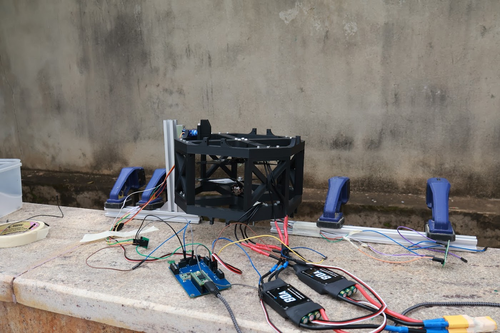
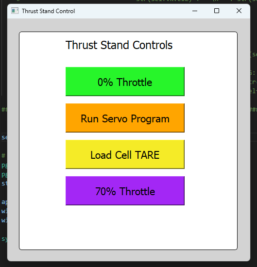
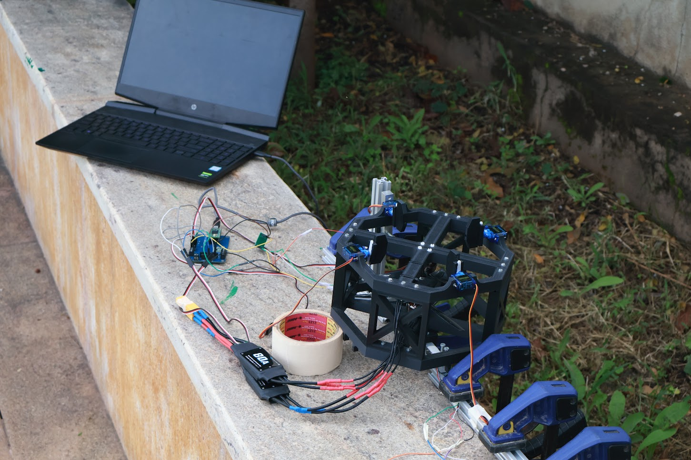

August - November 2025
Dev Log 26
Project Update - August 2025
This month I upgraded the test stand to measure TVC vane deflection as well as motor thrust. The way I'm doing this is mounting another load cell on L-shaped aluminium extrusions right up against one of the TVC servos (fig 1). This will give me the data I need to create the transfer function for converting servo angle to side force generated in the control system.

I also threw together a simple GCS UI (fig 2) for the stand, using Python and PyQt5. This simple UI lets me control the thrust of the brushless motors, activate a simple servo routine for cycling through various vane deflections, and zero-ing out the load cells.

I tested this setup several times, with all tests yielding the same garbage data. I only later realized that this setup for measuring side force was fundamentally wrong. I was under the impression that one singular servo parallel to the load cell would generate a side force that is detectable enough by the load cell. However, it should be two servos in tandem, orthogonal to the load cell.
I'll have to redo these tests next month to get usable data.
Project Update - September 2025
I ran the new TVC vane deflection tests this month (fig 3), and I'm pretty happy with the data. There is a proper correlation between vane angle and side force that I can use for creating my transfer function. There are still some inconsistencies between what I expect and what the data tells me (especially at larger deflection angles), so I think some additional tests may be in order.

Project Update - October 2025
I made no progress this month because of college applications
Project Update - November 2025
I made no progress this month because of the same reason as October. Next month I should have more free time to work on the Lander.